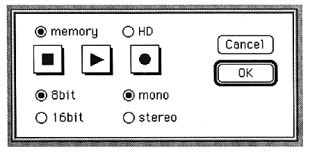

Stop
Stops playing and recording.
Play
Sounds SCSP.
Rec
Recording starts.
memory
Enter memory recording mode.
HD
Switch to hard disk recording mode.
8bit
Import as 8bit PCM data.
16bit
Capture with 16bit PCM data.
mono
Input and output in monaural.
stereo
Input and output in stereo.